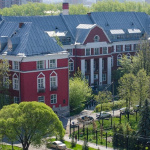
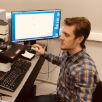
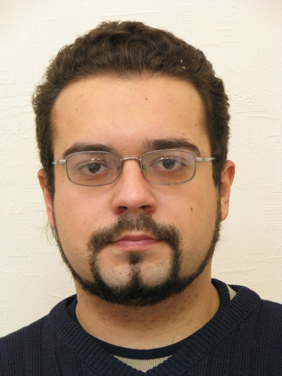

Новости института

22:00 24.05.2022
Поступай в Институт компьютерных наук и технологий:
Первый набор в Институт пройдёт на 3 IT-направления: "Приклодная математика и и нформатика", "Фундаментальная информатика" и "Информационные системы и технологии".

19:00 23.08.2022
Шесть студентов ПГНИУ в новом учебном году будут получать степендии Правительства и Президента РФ:
В 2022/23 учебном году шестеро обучающихся Пермского университета стали стипендиатами Правительства и Президента РФ.

16:00 20.09.2022
Студенты ПГНИУ стали победителями олимпиады по программированию Казанского университета:
Пять команд механико-математического факультета ПГНИУ победили в Открытой олимпиаде Казанского университета по программированию.


Об институте
Основной задачей Института компьютерных наук и технологий ПГНИУ является создание условий для обучения, в которых каждый поступивший сможет найти свое направление деятельности в большом мире информационных технологий и полностью раскрыть свой интеллектуальный потенциал. Пермский университет хорошо понимает, что поступающие на ИТ-направления бакалавриата выпускники школ не всегда четко сознают, кем именно они хотят стать: специалистами по машинному обучению, DevOps инженерами, экспертами в области компьютерной безопасности, системными программистами, исследователями-создателями новых компьютерных моделей, или еще кем-то из огромного перечня специалистов мира ИТ. Поэтому поступающим в институт мы предлагаем программу обучения, которая на 25% формируется самим студентом индивидуально в процессе обучения, путем выбора дисциплин из предлагаемых каждый год, начиная со 2 курса. Перечень предлагаемых для выбора дисциплин составляется с учетом тех требований к выпускникам, которые предъявляют ИТ компании в своих вакансиях.
Директор, кандидат технических наук Алексей Юрьевич Городилов